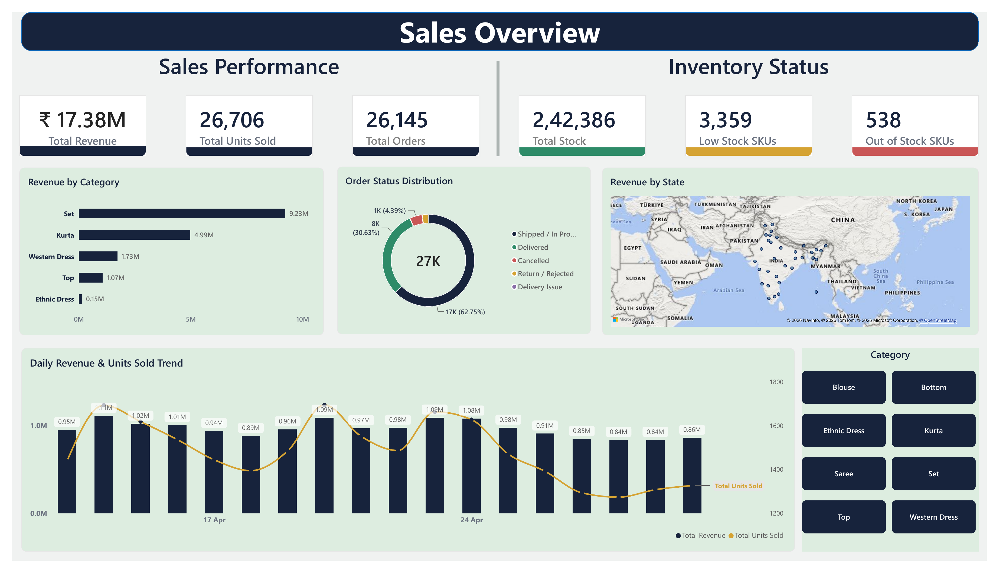
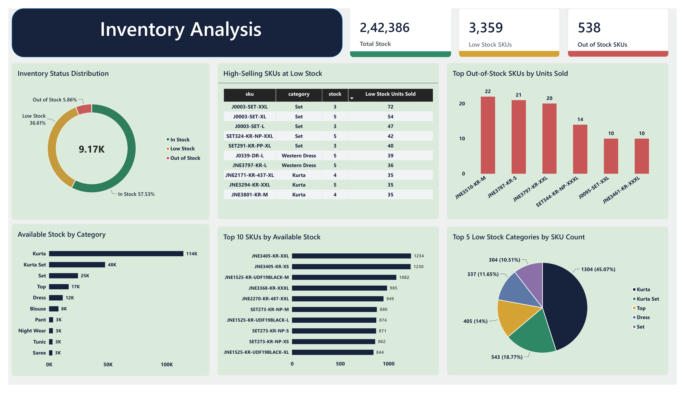
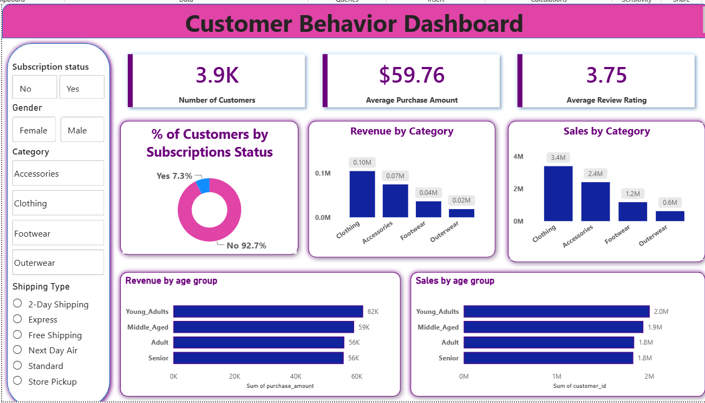

Hello, I'm
Data analytics professional with 3+ years of experience in operations, reporting, and coordination, complemented by Data Analytics training and a completed 6-month Data Analyst internship. I transform data into meaningful insights through analysis, reporting, and interactive dashboards.
View My Projects Resume LinkedIn GitHubA professional background combining operations experience with practical data analytics training and internship experience.
I am Pavan Kumar N, a Data Analytics professional with over 3 years of professional experience at CBRE, where I worked in helpdesk operations, reporting, stakeholder coordination, and process management. During my tenure, I progressed from Helpdesk Executive to Senior Helpdesk Executive, taking on broader operational and team coordination responsibilities.
To strengthen my technical capabilities and build on my experience with Excel and operational reporting, I completed Data Analytics training at Besant Technologies and developed practical skills in SQL, Python, Power BI, and Advanced Excel. I also completed a 6-month Data Analyst internship at B Dreams Global Solutions, applying analytics tools and techniques to project-based work.
My skills include data preparation, data analysis, SQL querying, exploratory analysis, data visualization, KPI reporting, and dashboard development. I enjoy translating business questions into structured analysis and clear reporting that supports informed decision-making.
I am currently seeking opportunities as a Data Analyst, Junior Data Analyst, BI Analyst, or MIS Analyst, where I can combine my professional experience, analytical skills, and technical knowledge to contribute to business reporting and insights.
Tools and analytical capabilities applied in my training, internship, and projects.
End-to-end analytics projects demonstrating data preparation, SQL analysis, business intelligence, visualization, and reporting.

An end-to-end retail analytics project using sales and inventory datasets. Prepared and analyzed data with Python and SQL, explored revenue, units sold, orders, product categories, customer segments, sales channels, geographic trends, and inventory status, and developed Power BI dashboards to present business metrics and insights.


Completed as part of my 6-month Data Analyst internship at B Dreams Global Solutions. Analyzed 3,900 customer records to explore purchasing patterns, customer demographics, subscription behavior, discounts, product categories, shipping preferences, and customer segments. Used SQL for business analysis and developed an interactive Power BI dashboard with customer KPIs and visual insights.
Experience across data analytics internship work, operations, reporting, team coordination, and stakeholder communication.
Academic and professional learning supporting my business and analytical foundation.
Completed Data Analytics training with practical exposure to SQL, Python, Power BI, Excel, data preparation, analysis, visualization, and project-based learning.
Specialization: Human Resources
Bangalore University
Government First Grade College, Gauribidanur
Bangalore North University
Additional learning and practical exposure in Data Analytics and Power BI.
TechTip24 — April 2026
Data Analytics workshop focused on Power BI for beginners, including an end-to-end project.
Verify CredentialI am exploring opportunities in Data Analytics, Business Intelligence, and MIS reporting. I welcome connections with recruiters, hiring professionals, and fellow data enthusiasts.
Email Me Resume LinkedIn GitHub Portfolio